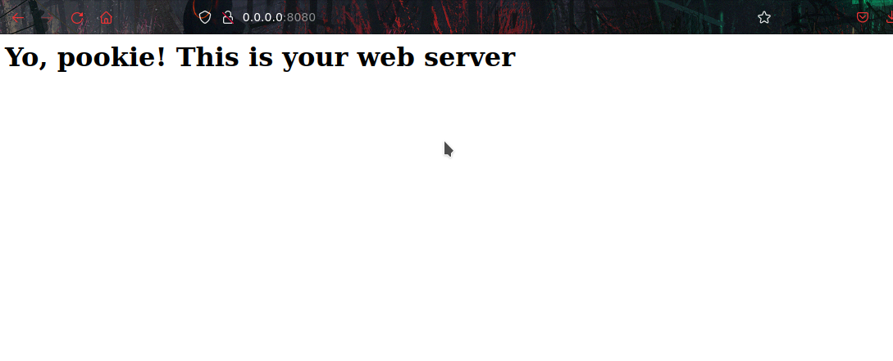

Web Server with Sockets
what's up, It's Naty here, and today, I'm about to break down something you didn’t know you needed a freakin web server built with python sockets Yeah, no need for that fancy Flask or Django crap. We're going raw, using straight up Python like a boss. Let’s start
Why the Hell Use Sockets?
First off, let me hit you with some knowledge. The web is full of servers, right? Whenever you hit a website, you’re talking to a server. Normally, you’d use something pre-packaged like Apache or Nginx, but we’re gonna go all full on this thing and make our own from scratch. Sockets are like the bare-ass metal. You use 'em to create connections send data back and forth, and basically be the Heisenberg of data transfers
import socket
Sockets are built into python, which means we don't need any extra libraries
server_socket = socket.socket(socket.AF_INET, socket.SOCK_STREAM)
server_socket.bind(('0.0.0.0', 8080))
server_socket.listen(5)
Here's what's going down
socket.AF_INET This is IPv4, the classic. We’re not doing any of that IPv6 stuff
socket.SOCK_STREAM We’re using TCP, which is reliable. Unlike some people in my life
bind(('0.0.0.0', 8080)) We're telling the server to listen on port 8080. If you wanna be real ballsy, go for port 80, but you'll need admin rights for that. stick to 8080 for now
listen(5) We're telling the server to listen for incoming connections. The number in parentheses means how many connections we can backlog before things start exploding. You don't wanna go too high, otherwise, you/re just asking for trouble
Step 3: Accept Connections Like a Boss
Now we gotta make the server respond to requests. This is where the magic happens
while True:
client_socket, addr = server_socket.accept()
print(f'Connection from {addr}.')
request = client_socket.recv(1024)
print(request.decode('utf-8'))
server_socket.accept() This is like opening the door to your house. It accepts a connection and gives us the client’s socket and address.
client_socket.recv(1024) We're receiving data from the client, 1024 bytes at a time. That’s enough for most HTTP requests.
You know how you go to a website and you get a page back? Yeah, we’re gonna send back a real basic html page
response = 'HTTP/1.1 200 OK\n'
response += 'Content-Type: text/html\n\n'
response += '<html><body><h1>Yo, pookie! This is your web server!</h1></body></html>
'
client_socket.sendall(response.encode('utf-8'))
client_socket.close()
HTTP/1.1 200 OK We're saying, 'the connection's all good. Here's your damn page'.
Content-Type: text/html This tells the browser we're sending html, so it knows what to do with it
Then we send a simple html page

What's Next
You could just sit here and admire your work, but I say: take this server, and start adding more shit to it handle different types of requests, serve files, whatever! Hell, if you’re feeling cocky you can even add routing. Happy coding, Keep it tight